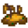

Luck
 Warning: Spoilers
This page or section contains unmarked spoilers from update 1.6 of Stardew Valley. Players may want to avoid or be cautious toward reading this article/section. |

Luck  is a statistic that affects many different aspects of the game, such as the chance of finding geodes and chance of getting treasure from Fishing. There are several sources of luck: daily luck determined by the game, buffs gained from eating certain food and drink, a Special Charm which gives a small permanent luck boost, and the Lucky Ring.
is a statistic that affects many different aspects of the game, such as the chance of finding geodes and chance of getting treasure from Fishing. There are several sources of luck: daily luck determined by the game, buffs gained from eating certain food and drink, a Special Charm which gives a small permanent luck boost, and the Lucky Ring.
Daily Luck
The base value for daily luck is a randomly generated number from -0.1 (unlucky) to 0.1 (lucky).[1] The value is increased by 0.025 with the Special Charm. The value is used in numerous ways; though it looks like a percentage equal to 10%, it is in fact treated differently in every situation and may have a minuscule or enormous effect depending on the activity.
Daily luck can be checked by right-clicking on the Television and selecting "Fortune Teller." The Fortune Teller will give an indication of the daily luck stat modifier. Luck is determined at the start of the day and is not affected by choosing to view the Fortune Teller Television Program. Daily luck does not change if the day is restarted, but it can change by replaying the previous day.
Before revealing the luck message, one of the following messages is shown randomly (the first two being gender-specific). They do not affect the luck in any way.
| “ | “Ah... I sense that a new viewer has joined us. A young man from... Stardew Valley? Welcome, welcome!” |
| “ | “Ah... I sense that a new viewer has joined us. A young lady from... Stardew Valley? Welcome, welcome!” |
| “ | “Ah... yes, I can hear the spirits whispering something to me... ” |
| “ | “Welcome back to 'Welwick's Oracle'... If you seek hidden knowledge of the future, well you've come to the right place.” |
| “ | “Hoo.. I see a glimmer within my scrying orb... A shard of knowledge from the future!” |
| “ | “Welcome to Welwick's Oracle... the ONLY show where the voice of the spirits is channeled directly... to YOU.” |
| Message | TV Display | Stat Bonus [2] |
|---|---|---|
| The spirits are very happy today! They will do their best to shower everyone with good fortune. | ||
| The spirits are in good humor today. I think you'll have a little extra luck. | 
|
|
| The spirits feel neutral today. The day is in your hands. | 
|
|
| This is rare. The spirits feel absolutely neutral today. |
|
|
| The spirits are somewhat annoyed today. Luck will not be on your side. The spirits are somewhat mildly perturbed today. Luck will not be on your side. |

|
|
| The spirits are very displeased today. They will do their best to make your life difficult. | 
|
Special Charm
After reading Secret Note #20 and solving the puzzle depicted, the player is awarded with a Special Charm that permanently increases daily Luck by 0.025.
Daily Luck Effects
Daily luck affects the following:
- Mining
- Chance to discover ladders from breaking rocks while Mining.
- Geode and coal drop chance from rocks.
- Chance of finding Gem Nodes and Mystic Stones in The Mines or Skull Cavern.
- Chance that crates spawn in The Mines.
- Chance to find treasure rooms in the Skull Cavern.
- Amount of gold and items lost when dying in The Mines or Skull Cavern.
- Chance of finding Radioactive Nodes in The Mines (while the Shrine of Challenge is active) or Skull Cavern (while Skull Cavern Invasion is active).[3]
- Other
- Chance of treasure chests appearing while Fishing.
- Chance of getting special items (e.g., Neptune's Glaive, Prismatic Shard, Iridium Band).
- Chance to double the number of crops yielded at harvest. Works for any crop, and a unique "dwoop" sound effect plays if this occurs as the result of a luck-based check.[4]
- Drop chance of Duck Feather and Rabbit's Foot from animals.
- Amount of wood dropped from trees.
- Quality and number of ores obtained from panning.
- Chance of getting a second item (in addition to ore) from panning.
- Chance of getting items from Garbage Cans and the chance the item is not trash.
- Chance the spouse will be jealous after giving a gift to another marriage candidate that the player is also currently dating.
- Results of playing slots at the Casino.
- Amount of lightning during a storm (higher luck increases the amount).[5]
- Chance of a tree being struck by lighting (higher luck decreases the chance).[5]
Luck Buffs
Luck Buffs are temporary bonuses gained from:
- consuming certain food and drink
- consuming dishes from the Chef at the Desert Festival
- wearing the Lucky Ring
- receiving the Blessing of Luck buff from the Statue Of Blessings
Only one drink-derived buff and one food-derived buff can be active at a given time. However, dishes from the Chef at the Desert Festival can stack on top of the food and drink buffs, which includes any luck buffs potentially received from the dishes. A buff of +2 for example may have similar effects to a daily luck value of 0.1, though it is treated differently in every situation and may have a minuscule or enormous effect depending on the activity.
The following food and drink provide a temporary luck buff:
| Image | Name | Description | Ingredients | Energy / Health | Buff(s) | Buff Duration | Recipe Source(s) | Sell Price | |||
|---|---|---|---|---|---|---|---|---|---|---|---|
| Banana Pudding | A creamy dessert with a wonderful tropical flavor. |
|
|||||||||
| Fried Eel | Greasy but flavorful. |
|
|||||||||
| Ginger Ale | A zesty soda known for its soothing effect on the stomach. | Dwarf Shop in Volcano Dungeon for |
|||||||||
| Lucky Lunch | A special little meal. |
|
|||||||||
| Pumpkin Soup | A seasonal favorite. |
|
|||||||||
| Shrimp Cocktail | A sumptuous appetizer made with freshly-caught shrimp. |
|
|||||||||
| Spicy Eel | It's really spicy! Be careful. |
|
|||||||||
| Magic Rock Candy | A rare and powerful candy infused with the essence of the prismatic shard. | N/A | N/A |
The following ring gives a luck buff:
| Image | Name | Description | Effect | Where to Find | Ingredients | Purchase Price | Sell Price |
|---|---|---|---|---|---|---|---|
| Lucky Ring | The lunar emblem is said to bring good luck to whoever wears it. | Increases |
Dropped as a special item in the Skull Cavern, or rarely by panning. | N/A | N/A |
Below is a table of the luck buffs that can be obtained from the Chef at the Desert Festival:
| Image | Name | Buffs | Buff Duration | Ingredients |
|---|---|---|---|---|
| Sour Salad | Rare Fruit + Rich Marinara | |||
| Superfood Cake | Rare Fruit + Mushroom Creme | |||
| Warrior Smoothie | Rare Fruit + Pungent Garlic | |||
| Rumpled Fruit Skin | Rare Fruit + Uncomfortably Hot Sauce | |||
| Sweet Bean Cake | Hearty Beans + Cherry Syrup | |||
| Crystal Cake | Cave Loaf + Cherry Syrup | |||
| Elf Quesadilla | Extremely Sharp Cheddar + Cherry Syrup | |||
| Shrimp Donut | Shrimp + Cherry Syrup |
Luck Buff Effects
Total luck buff is treated separately from total daily luck, and the effects of the two types of luck are not automatically the same; both the types of events affected by luck buffs and the magnitude of the effect can be different.
Known differences between daily luck and luck buffs include:
- Chances of receiving Duck Feather and Rabbit's Foot are not improved by luck buffs.
- For Fishing Treasure Chest contents, a luck buff does not improve special item chances. Instead, it increases the chance of getting double quantities of resources and gems. It also allows standard rings (Glow Ring, Magnet Ring) to appear in place of small rings (Small Glow Ring, Small Magnet Ring).
- When breaking stone, chances for extra Cinder Shards, Bone Fragments, Clay, Stone, and all Ore depend on the player's Mining level and luck buffs, but not daily luck[6].
- Weapon Crit. Chance is boosted by luck buffs but not daily luck[7].
- Chances of activating the Ring of Yoba[8] or Warrior Ring[9] are boosted by luck buffs but not daily luck.
- Chances of finding certain modified monster drops, including Mahogany Seed, Galaxy Soul, and Qi Gem depend on luck buffs but not daily luck[10].
References
- ↑ See Game1::_newDayAfterFade in the game code.
- ↑ See Objects.TV::getFortuneForecast in the game code.
- ↑ See Locations.MineShaft::chooseStoneType in the game code.
- ↑ See Crop::Harvest in the game code.
- ↑ 5.0 5.1 See Utility::performLightningUpdate in the game code.
- ↑ See StardewValley.GameLocation::breakStone in the game code
- ↑ See StardewValley.GameLocation::damageMonster in the game code
- ↑ See StardewValley.Farmer::takeDamage in the game code
- ↑ See StardewValley.Objects.Ring::onMonsterSlay in the game code
- ↑ See StardewValley.GameLocation::monsterDrop in the game code
History
- 1.3.27: Officially added Special Charm to the game. Treasure rooms added to Skull Cavern, which are affected by luck.
- 1.4: Magic Rock Candy introduced. Special Charm luck increase changed to a static 0.025. Giving datable NPCs a gift no longer makes the player's spouse jealous unless they're currently dating them.
- 1.5: Lucky Ring, Banana Pudding, and Ginger Ale introduced.
- 1.6: Luck buffs from Chef dishes at the Desert Festival introduced.
| Skills & Stats | |
|---|---|
| Skills | Farming • Mining • Foraging • Fishing • Combat |
| Stats | Attack • Crit. Chance • Crit. Power • Defense • Immunity • Luck • Magnetism • Speed • Weight |